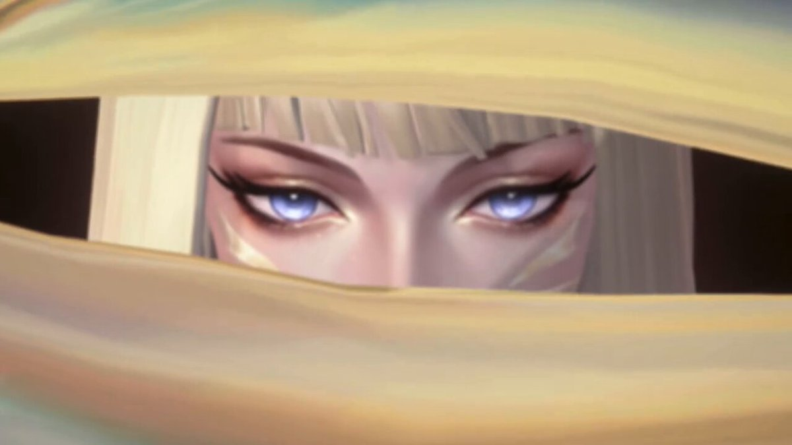
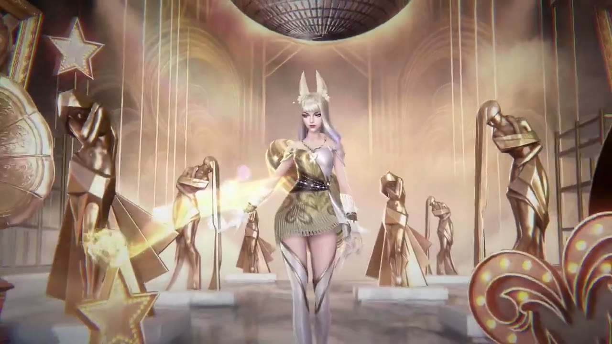
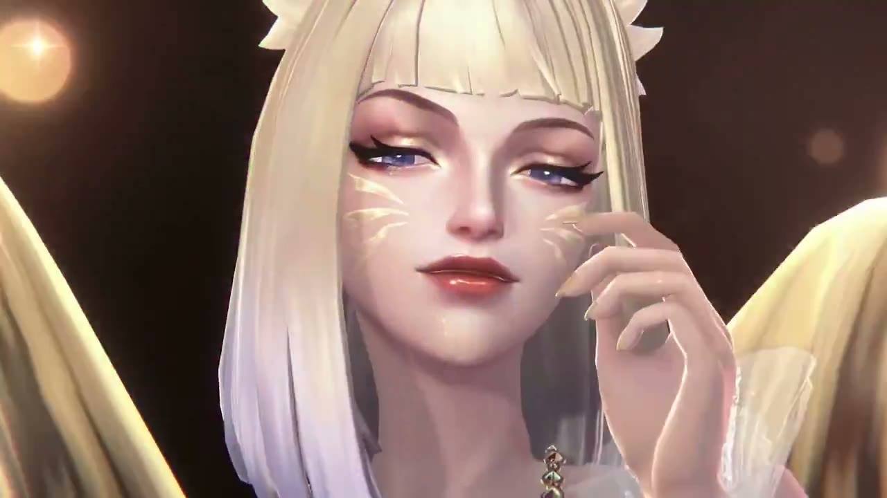
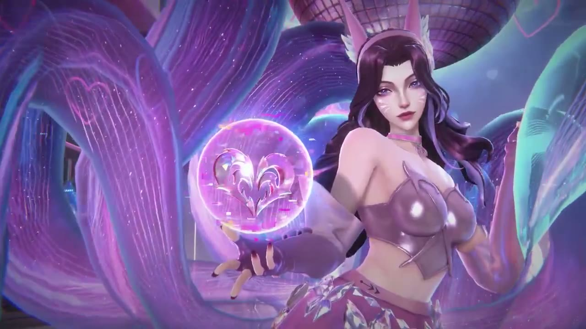
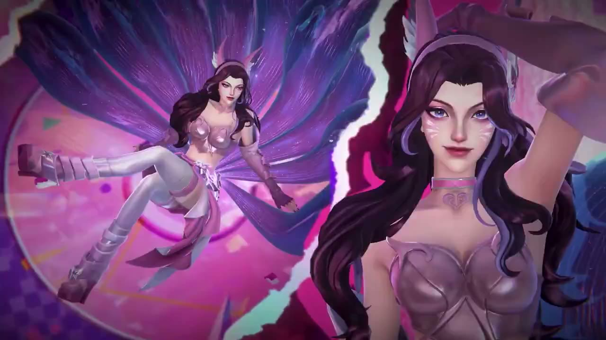
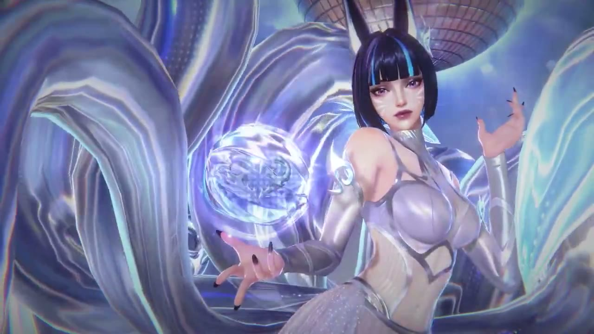
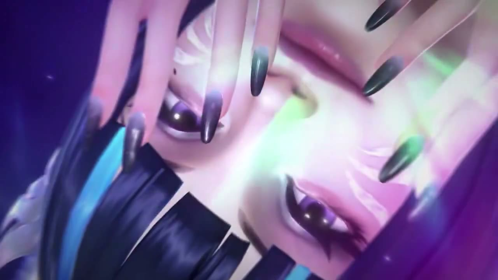

와일드 리프트 K/DA 아리 스킨 3종 프리뷰, 루멘 롤리팝 길디드 영상 & 11월 4일 UTC 출시 소식
안녕하세요, 영원한도시입니다. 와일드 리프트 공식 X에 K/DA 아리 영상이 올라왔는데요, 스킨 하나가 아니라 세 가지 모습이 한 영상에 줄줄이 담겨 있더라고요.
이 글은 PC 본편이 아니라 모바일 '리그 오브 레전드: 와일드 리프트' 기준이고, 공식 계정이 올린 영상과 트윗에서 확인되는 것만 단정했습니다. 등급이나 가격처럼 아직 안 나온 건 3번 항목에 모아 뒀어요.

영상 썸네일로 쓰인 컷이에요. 금빛 천 사이로 눈만 빼꼼 보이죠?
이미지 출처: 와일드 리프트 공식 X 계정 게시 영상 캡처
1. 공식 공개 사실, 10월 23일 영상
와일드 리프트 공식 X 계정이 2026년 10월 23일 K/DA 아리 스킨 3종 영상을 올렸고, 출시일은 11월 4일(UTC)이라고 밝혔습니다.
- 게시: 10월 23일 02:00 UTC, 한국 시간으로 오전 11시
- 스킨명: 'K/DA Lumen Ahri' · 'K/DA Lollipop Ahri' · 'K/DA Gilded Ahri' (루멘ㆍ롤리팝ㆍ길디드는 제가 붙인 독음이고 확인된 공식 한글명이 아직 없어요)
- 영상: 약 58초, 해상도 1280×720
- 출시: 11월 4일(UTC), 시각은 따로 안 적혀 있음
트윗 문구는 "Of course she has a fit for every occasion. Choose your vibe or rock with all three on November 4th UTC."인데요, 어떤 자리에도 어울리는 옷이 있으니 취향대로 하나 고르거나 셋 다 즐기라는 말로 읽힙니다. UTC 11월 4일을 한국 시간으로 바꾸면 11월 4일 오전 9시부터 11월 5일 오전 9시 사이인데, 그 안에서 정확히 언제인지는 공식 안내가 없었어요. 한국이 UTC보다 9시간 빠르니 UTC 00:00이 한국 오전 9시, UTC 23:59는 한국 시간 다음 날 오전 8시 59분이라서, 한국에서는 4일 낮에 열릴 수도 있고 5일 새벽에 열릴 수도 있습니다.
2. 세 가지 모습 외형 훑어보기
영상 속 세 모습은 금빛, 분홍ㆍ보라 네온, 은빛 청백색으로 색부터 뚜렷하게 갈립니다. 영상에 모습별 이름표가 따로 없어요. 분홍ㆍ보라 팝 색감은 Lollipop이 분명하지만, 나머지 둘은 이름 뜻(Gilded는 '금도금한', Lumen은 '빛')과 색으로 짝지은 거라는 점을 먼저 밝혀 둘게요. 참고로 영상은 Gilded, Lollipop, Lumen 순서로 이어지는데, 트윗에 적힌 나열 순서(Lumen, Lollipop, Gilded)와는 거꾸로예요.
Gilded 쪽은 금ㆍ백금 톤이에요. 지금 보시는 화면처럼 흰 금발에 끝만 은빛 보라로 물든 머리, 금색 미니 드레스에 검은 벨트, 은색 부츠 차림입니다. 뒤로는 황금 동상들이 늘어서 있고 왼쪽 가장자리엔 축음기, 아래엔 전구가 박힌 별이 보이는데, 동상에 축음기에 미러볼까지 시상식 겸 파티장 같네요 ㅋㅋ

황금 동상이 줄지어 선 무대 한가운데, 금빛 기운이 손끝에서 번지는 컷
이미지 출처: 와일드 리프트 공식 X 계정 게시 영상 캡처
얼굴이 가득 잡히는 컷에서는 푸른빛 눈매와 볼 위로 번진 금빛 줄무늬가 또렷하더라고요. 반쯤 감은 눈에 머리카락을 쓸어 넘기는 손짓까지, 힘을 뺀 우아한 분위기입니다.

클로즈업으로 보면 볼의 금빛 줄무늬가 더 잘 보여요
이미지 출처: 와일드 리프트 공식 X 계정 게시 영상 캡처
Lollipop은 분홍ㆍ보라ㆍ청록 네온이 섞인 팝 느낌이에요. 긴 웨이브 흑갈색 머리에 보라 하이라이트가 들어가고, 광택 있는 분홍 크롭 상의에 분홍 초커를 찼습니다. 이미지 왼쪽을 보면 손 위에 분홍 구슬이 떠 있고 그 안에 하트 문양이 들어 있는데, 보라와 청록이 섞인 꼬리 결도 눈에 띄네요. 영상에는 카세트ㆍTVㆍ헤드폰ㆍ별 소품도 나옵니다.

하트 문양이 든 분홍 구슬과 보라ㆍ청록 꼬리
이미지 출처: 와일드 리프트 공식 X 계정 게시 영상 캡처
화면이 반으로 갈라지는 컷도 있는데요, 왼쪽엔 꼬리를 부채처럼 펼치고 공중에 뜬 전신, 오른쪽엔 살짝 웃는 얼굴이 붙어 나옵니다. 배경의 분홍 바탕과 체크무늬 보라 바닥이 이 모습의 팝한 결을 그대로 보여줘요.

분할 화면 속 전신과 얼굴, 배경 색감이 확실히 팝해요
이미지 출처: 와일드 리프트 공식 X 계정 게시 영상 캡처
Lumen은 은색ㆍ청백색 홀로그램 금속 질감이에요. 검은 단발 뱅에 푸른 줄기 하이라이트, 은색 홀터풍 의상, 얼음빛 구슬까지 차가운 색으로 맞췄습니다. 같은 구슬 포즈인데도 꼬리가 거울처럼 번쩍여서 앞의 분홍 구슬과는 분위기가 전혀 다르고요, 주인장 눈에는 이 거울 같은 꼬리 질감이 제일 먼저 들어오더라고요.

은빛 꼬리가 거울처럼 번쩍이는 구슬 포즈
이미지 출처: 와일드 리프트 공식 X 계정 게시 영상 캡처
세 장면 모두 위쪽에 미러볼이 보여서 한 무대에서 옷만 갈아입는 연출처럼 느껴졌어요. 귀 장식과 신발도 모습마다 달라서, Gilded는 흰 장식이 붙은 밝은 귀에 은색 부츠, Lollipop은 흰 날개 머리띠가 얹힌 분홍 귀에 라벤더빛 굽 높은 부츠, Lumen은 검은 귀로 나옵니다.
세 모습 모두 구슬을 쓰는데 Gilded는 금빛, Lollipop은 분홍, Lumen은 얼음빛이라, 색만 바꾼 게 아니라 연출 틀도 맞춰 둔 것 같네요. 머리색과 귀, 구슬 색만 기억해 두면 영상을 볼 때 헷갈릴 일이 없겠어요.
카메라가 얼굴에 바짝 붙는 컷에서는 검은 손톱과 푸른 머리 줄기, 보랏빛 눈이 화면을 가득 채웁니다.

검은 손톱과 푸른 머리 줄기가 화면을 채우는 클로즈업
이미지 출처: 와일드 리프트 공식 X 계정 게시 영상 캡처
3. 아직 공식 미공개인 것
공개된 영상과 트윗만으로는 등급, 가격, 한글 공식명, 패치 번호, 정확한 출시 시각을 알 수 없습니다.
- 등급(Ultimate 여부), 그리고 3종이 개별 스킨인지 한 스킨 안의 형태 전환인지
- 가격(와일드 코어 기준)
- 11월 4일 UTC 안의 정확한 시각과 적용 패치 번호
- 한글 공식명 (10월 23일 기준 한국어 공식 뉴스 목록에서 이 영상 소식을 찾지 못해 영문 표기를 그대로 썼어요)
- 함께 나오는 다른 K/DA 스킨ㆍ신곡 여부, PC 본편 동시 출시 여부
확인 위치: 와일드 리프트 한국어 공식 뉴스 · 공식 X(@wildrift) · 출시 후 인게임 상점 · 확인되면 이 박스를 실제 내용으로 바꿔 주세요.
그래서 지금 시점에서 확정인 건 '이런 모습의 아리 스킨 3종이 11월 4일 UTC에 나온다'까지예요. 구매를 고민 중이시라면 가격과 등급이 공개되는 시점까지 기다려 보셔도 늦지 않아요. 세 모습을 따로 사야 하는지도 아직 모르니까요.
비공식 유출 보도로는 'Firestarter' 라인이 유력하고 아리가 4형태(Ultimate)로 나온다고 알려졌어요(players.com.ua 보도). 다만 이번 공식 트윗에서 확인되는 건 스킨 이름 3개뿐이니 유출 내용은 비공식으로만 알고 계세요.
4. 출시 후 확인할 것
출시 후에는 상점 가격과 등급 표기, 세 모습의 적용 방식, 한글 공식명 세 가지부터 확인하면 위의 빈칸이 대부분 채워집니다.
- 상점에 표시되는 가격과 등급 문구 (영상만으로는 알 수 없는 부분이에요)
- 세 모습이 따로 판매되는지, 한 스킨 안에서 전환하는지
- Gilded와 Lumen이 영상 속 어느 모습과 짝인지 (지금은 이름 뜻과 색으로 맞춘 것이라 공식 이름표가 붙으면 대조해 보세요)
- 스킬 이펙트와 귀환 연출 (이번 영상에서 넥서스ㆍ포탑 피니셔는 확인하지 못했습니다)
아래 두 자리는 출시 뒤에 직접 캡처해서 채울 곳이고, 이 두 화면만 있으면 가격과 등급, 적용 방식이 한 번에 확인됩니다. 한국어 공식 뉴스가 올라오면 한글 표기도 그때 맞춰 두겠습니다.
가격과 등급 표기가 한눈에 보이는 상점 화면
세 모습을 어떻게 고르는지 보여주는 상세 화면
지금까지 와일드 리프트 K/DA 아리 스킨 3종 미리보기였습니다. 11월 4일 UTC가 지나서 가격과 등급이 나오면 확정된 내용으로 다시 정리해서 알려드릴게요. 그럼 다음 포스팅으로 찾아올게요 :)
참고한 곳 (2026.10.23 기준)
· 와일드 리프트 공식 X(@wildrift) K/DA 아리 스킨 3종 게시글
· 리그 오브 레전드: 와일드 리프트 한국어 공식 뉴스
▶ 같이 보면 좋은 글
· 와일드리프트 비활성화 계정 활성화로 전환하는 방법
· 와일드리프트 빅토르 깨알 상식 퀴즈 정답 총정리